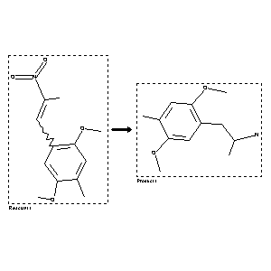

 |
| FA | RX(1); FLST(1); RX(3) |
Reaction (1 of 1)
| Reaction ID | 2094160 |
| Reactant BRN | 2122816 |
| Reactant | 1-(2,5-Dimethoxy-4-methyl-phenyl)-2-nitro-propen |
| Product BRN | 2806354 |
| Product | 1-(2,5-dimethoxy-4-methylphenyl)-2-aminopropane |
| No. of Reaction Details | 3 |
Reaction Details (1 of 1)
| Reaction Classification | Preparation |
| Reagent | LiAlH4, H2SO4 |
| Solvent | tetrahydrofuran |
| Other Conditions | Ambient temperature |
| Citation Pointer | 5595464; Journal; Glennon, Richard A.; Raghupathi, Reva; Bartyzel, Piotr; Teitler, Milt; Leonhardt, Sigrun; JMCMAR; J.Med.Chem.; EN; 35; 4; 1992; 734-740; |
Reaction Details (2 of 1)
| Reaction Classification | Preparation |
| Reagent | H2, aq. HCl |
| Catalyst | Pd-C |
| Solvent | ethanol |
| Citation Pointer | 27702; Journal; Coutts,R.T.; Malicky,J.L.; CJCHAG; Can.J.Chem.; EN; 52; 1974; 395-399; |
Reaction Details (3 of 1)
| Reaction Classification | Preparation |
| Reagent | LiAlH4, H2SO4 |
| Solvent | tetrahydrofuran |
| Citation Pointer | 83260; Journal; Matin,S.B. et al.; JMCMAR; J.Med.Chem.; EN; 17; 1974; 877-882; |
Reference (1 of 3)
| Citation Number | 27702 |
| Document Type | Journal |
| Authors | Coutts,R.T.; Malicky,J.L. |
| CODEN | CJCHAG |
| Journal Title | Can.J.Chem. |
| Language Code | EN |
| (Series) Volume | 52 |
| Publication Year | 1974 |
| Page | 395-399 |
Reference (2 of 3)
| Citation Number | 83260 |
| Document Type | Journal |
| Authors | Matin,S.B. et al. |
| CODEN | JMCMAR |
| Journal Title | J.Med.Chem. |
| Language Code | EN |
| (Series) Volume | 17 |
| Publication Year | 1974 |
| Page | 877-882 |
Reference (3 of 3)
| Citation Number | 5595464 |
| Document Type | Journal |
| Authors | Glennon, Richard A.; Raghupathi, Reva; Bartyzel, Piotr; Teitler, Milt; Leonhardt, Sigrun |
| CODEN | JMCMAR |
| Journal Title | J.Med.Chem. |
| Language Code | EN |
| (Series) Volume | 35 |
| Number | 4 |
| Publication Year | 1992 |
| Page | 734-740 |